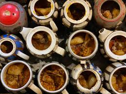
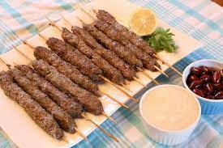
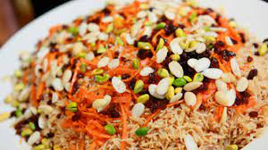

Manto
Mantu is one of the most popular Afghan food and it is common in gatherings and ceremonies. Also, you can find it in many Afghan restaurants. Mantu is an Afghan ravioli filled with beef and covered with yogurt sauce and tomato sauce. Therefore, this food that some people call manto or mantoo is a healthy and low calories appetizer. Let’s dive into cooking it.
Mantu ingredients:-
For cooking beef Mantu we mainly need minced meat, wonton wrappers, and yogurt. There is another Afghan dumpling called “Ashak” if you are not a fan of meat. You can make Ashak without the meat sauce. Well, it is time for the Afghan Mantu recipe. But first, we need to prepare our ingredients.
Bolane
Bolani is made with the help of handmade dough stuffed with vegetables such as potatoes, onion, green paper, and even cilantro. You see, it is effortless to make Bolani. You hardly need any ingredients as mentioned above are present in all our houses almost every day.
.jpg)
Chinake
there is a certain method to having the chainaki, a wholesome meat soup made in a teapot, called “chainak” in the Afghan language of Dari. First, you take the large naan that comes with every serving and break into tiny
Kabab
This food is very tasty like other northern dishes. Kabab Torsh is an excellent choice for kebab fans who are tired of the taste of other kebabs and are looking for a bit of variety. The main secret of the kebab’s sour taste is the use of local fragrant vegetables.
Kabuli Pulao
The famous Kabuli pulao, as the name states, is a traditional dish that belongs to Afghanistan. This dish is delicious and highly demanded in Afghan cuisine. Kabuli pulao was usually made by the higher classes of society in Afghanistan who had the opportunity to afford the materials and prepare this mouthwatering dish. By the passage of time, Kabuli pulao was spread all over Afghanistan. It is also called Qabali pulao. The word Qabali came from Dari language, which means to be able to. Later, it was considered that only those who had extraordinary skills as a chef could make the best Afghan-style pulao or pilaf .
